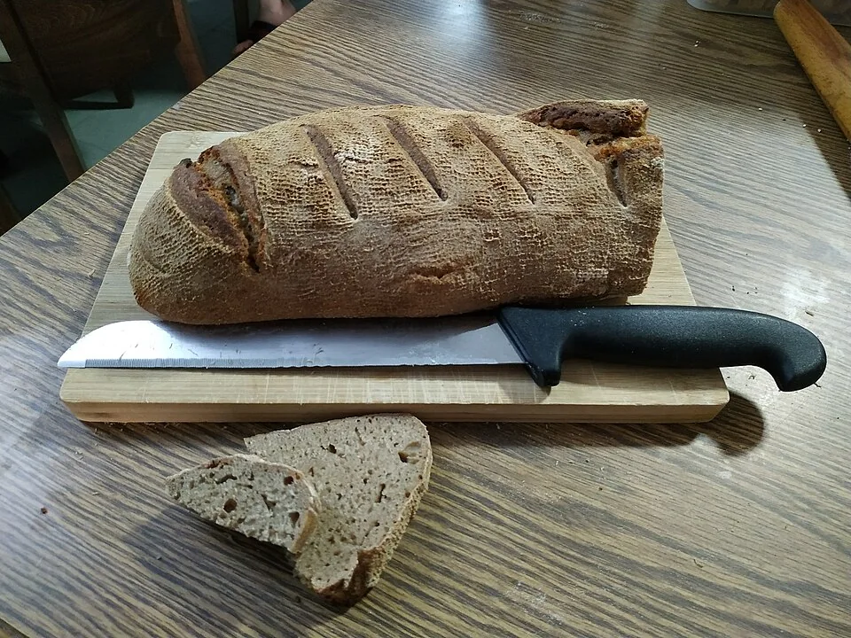

Vollkornbrot

Bildquelle
Zuletzt aufgerufen am
Schale, Keimling und Mehlkörper: Hier kommt das ganze Getreidekorn ins Brot.
- Herkunft – Viele regionale Traditionen
- Getreide – Ganzes Getreidekorn
- Geschmack – Kernig & aromatisch
Geschichte
Vollkornbrot ist keine einzelne regionale Erfindung. Der Name beschreibt vielmehr, welche Teile des Getreidekorns verwendet werden. Anders als bei hellem Auszugsmehl bleiben Schale und Keimling neben dem Mehlkörper erhalten. Vollkorn kann fein gemahlen oder als gröberes Schrot verarbeitet werden.
Entsprechend vielfältig sind die Brote: vom lockeren Weizenvollkornbrot bis zum dichten Roggenschrotbrot. In vielen europäischen Backtraditionen haben solche Brote ihren festen Platz. Heute wird Vollkornbrot sowohl handwerklich als auch zu Hause gebacken – pur, mit Saaten oder mit verschiedenen Getreidearten.
Quelle: Hintergrund: Vollkornbrot
Zuletzt aufgerufen am
Eigenschaften
-
Zutaten
Vollkornmehl oder Vollkornschrot, Wasser, Salz und Hefe oder Sauerteig. Saaten sind möglich, aber nicht notwendig. -
Geschmack
Ausgeprägt getreidig, häufig nussig. Roggen, Weizen und Dinkel bringen jeweils eigene Aromen mit. -
Kruste
Je nach Getreide und Backweise zart bis kräftig. Sichtbare Körner sind kein Muss. -
Krume
Oft saftig und kompakter als bei hellem Brot; bei feinem Vollkornmehl trotzdem gleichmäßig und weich.
Frischkäse, knackige Radieschen oder ein Hummus passen gut zur aromatischen Krume.
Weitere Informationen
- Fein ist auch voll Vollkorn sagt etwas über die Bestandteile des Mehls aus, nicht über seine Körnung. Vollkornmehl kann sehr fein sein.
- Körner sind kein Beweis Eine Saatenkruste macht ein Brot noch nicht zum Vollkornbrot. Entscheidend sind die verwendeten Getreidemahlerzeugnisse.
- Die Farbe reicht nicht Auch ein dunkles Brot kann aus hellem Mehl bestehen. Den Vollkornanteil erkennt man zuverlässiger an Bezeichnung und Zutaten.
Rezept
Ein Kastenbrot aus Dinkelvollkornmehl mit einer Mischung aus Kernen.
Saftiges Vollkornbrot auf Chefkoch
Zuletzt aufgerufen am